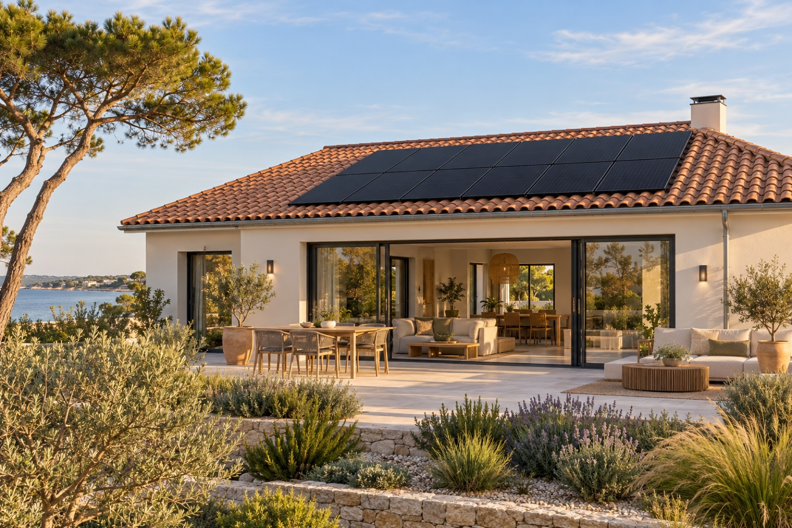
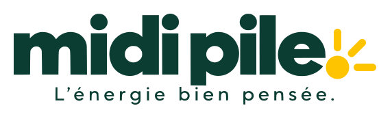
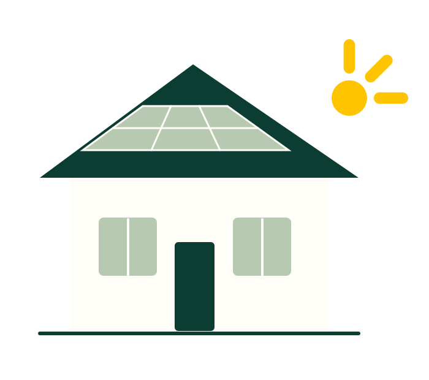
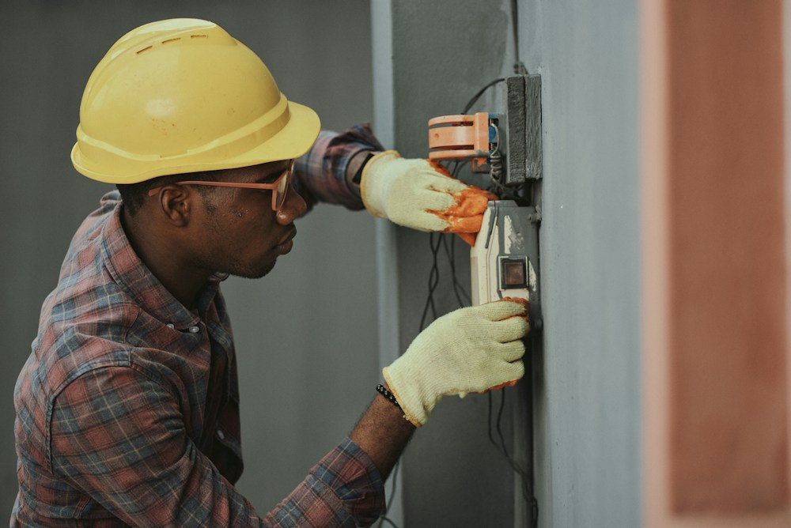

01 · PRODUIRELe soleil travaille
Le soleil travaille
pour votre maison.
Des panneaux photovoltaïques pour produire une partie de l’électricité que vous consommez.
↗
Prendre rendez-vous ↗L’énergie bien pensée. Ici, en Vendée.
Du soleil sur votre toit.
De l’intelligence dans votre maison.
Et des gens d’ici, à vos côtés.
01 / Trois expertises, une vision
Chaque équipement a son rôle.
Notre métier : les faire travailler ensemble,
quand cela a du sens pour vous.

Des panneaux photovoltaïques pour produire une partie de l’électricité que vous consommez.
↗Une batterie pour décaler l’usage du surplus, si vos habitudes le justifient.
↗Une borne adaptée à votre véhicule et à la puissance disponible chez vous.
↗Visuels d’ambiance et illustrations de principe. Ni chantiers Midi Pile, ni références de matériels sélectionnés.
02 / Le solaire, à votre mesure
3, 6 ou 9 kWc ? La bonne puissance
se choisit avec vos usages.
Pas simplement avec la taille de votre toit.
Offres en préparation. Montants de travail fournis pour la maquette, exprimés TTC. Configurations, matériels, périmètre de pose et fiscalité à finaliser avant commercialisation ; étude et devis nécessaires. Aucune aide déduite ni performance garantie.
Batteries et bornes pourront aussi être étudiées indépendamment d’une installation photovoltaïque, sous réserve de compatibilité.
03 / Votre premier éclairage
Quelques informations. Des repères concrets. Et une première idée de ce qui pourrait vous correspondre.
Une estimation, pas une promesse.
Cette démonstration ne remplace pas une étude de toiture et de vos courbes de consommation.
04 / Entrez dans une maison bien pensée
Une journée. Plusieurs façons d’utiliser l’énergie.
À vous de faire avancer le temps.
Explorez un équipement pour comprendre son rôle.
Puissances instantanées fictives, pertes non représentées. Chaque scène est indépendante : ce n’est pas une simulation de charge de batterie sur une journée. Une batterie ne garantit ni autonomie totale ni secours automatique en cas de coupure.

05 / Comprendre avant de se décider
Panneaux, batteries, autoconsommation, puissance, économies… Les notions essentielles pour poser les bonnes questions et faire vos propres choix.
Bientôt disponible · sans compte ni adresse e-mail.

Photographie d’illustration · ce n’est pas notre équipe06 / L’esprit Midi Pile
Notre conviction : un bon projet commence par des besoins compris. Et se poursuit avec un client qui sait utiliser son installation.
Nous souhaitons partir de votre consommation, de votre maison et de vos habitudes. Une batterie n’est pas une évidence : elle doit avoir une utilité réelle.
Comparer les solutions, expliquer les limites, rendre les hypothèses visibles. Vous gardez la main sur votre décision.
Des matériels sélectionnés avec exigence, une pose soignée et une prise en main pédagogique : les principes qui guident notre future offre.
07 / Un projet, étape par étape
Une méthode pensée pour avancer
avec confiance, sans brûler les étapes.
Vos usages, vos factures, vos envies. Nous commençons par écouter.
Une étude de votre maison et des options expliquées, avec leurs limites.
Préparer le chantier, poser les équipements et vous en expliquer l’usage.
Vous aider à lire votre suivi et à adapter vos habitudes au fil des saisons.
08 / Ancrés ici
Deux associés sablais. Un parcours dans la formation numérique. Et la même envie de rendre l’énergie plus simple.
Électriciens diplômés et anciens cadres de la formation, nous préparons Midi Pile avec une conviction : transmettre fait partie du métier.
Aux Sables-d’Olonne et en Vendée, nous voulons être vos interlocuteurs pour penser votre maison comme un ensemble : production, stockage, recharge et usages.
Les Sables-d’Olonne · VendéeEntreprise en création · lancement envisagé en novembre 2027.
Deux visages, une même conviction :
vous aider à choisir en comprenant.
La confiance se construit ensemble
Les récits ci-dessous servent à tester la présentation.
Ils ne proviennent pas de clients réels.
09 / On vous répond simplement
Un doute ? C’est souvent le meilleur
point de départ d’une conversation.
La bonne puissance dépend de votre consommation et surtout des moments où vous utilisez l’électricité, de la surface disponible, de l’orientation et des ombres. Une étude confirme le dimensionnement ; le seul total annuel ne suffit pas.
Vous utilisez directement une partie de l’électricité produite sur votre toit. Le surplus peut être stocké ou injecté sur le réseau. Quand le solaire ne suffit pas, le réseau complète.
Non. Il faut un surplus à stocker et des besoins décalés, souvent le soir. Son coût, ses pertes et sa durée de vie comptent. Déplacer certains usages en journée peut être plus pertinent.
Le kWc décrit la puissance nominale des panneaux dans des conditions de référence. Le kWh mesure une quantité d’énergie produite, stockée ou consommée. Une installation de 6 kWc ne produit pas 6 kW en permanence.
Oui. Elle utilise alors l’électricité du réseau. Il faut vérifier l’installation électrique, la puissance disponible et le besoin de pilotage pour éviter les dépassements.
En étudiant sa surface, son orientation, sa pente, les ombrages et son état. Une visite et une simulation de production détaillée complètent ces informations.
Selon les équipements retenus, une application permet de consulter la production et parfois la consommation. Les fonctionnalités, la connexion nécessaire et les conditions de suivi seront précisées dans l’offre.
Repère géographique illustratif · pas d’adresse d’accueil public
Proches de chez vous, et de vos questions
Basés aux Sables-d’Olonne, nous préparons un accompagnement de proximité pour vos projets d’énergie à la maison.
Le bon projet commence par un échange
Une maison, une question, une idée.
Prenons le temps de bien la penser.